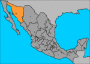

De: La Frikipedia, la enciclopedia extremadamente seria.
De: La Frikipedia, la enciclopedia extremadamente seria. De: La Frikipedia, la enciclopedia extremadamente seria.
| De la serie Países del planeta tierra: | |||||
| Sonora | |||||
|---|---|---|---|---|---|
| |||||
| Lema: Aquí Se acaba la cultura, Empieza la carne asada | |||||
| Himno: Amo a mi Cahuama
| |||||
| 
Por si las dudas: es la parte naranja | |||||
| Capital | Hermosillo | ||||
| Mayor ciudad | Obregón | ||||
| Lenguas oficiales | Español pero cambiando la "Ch" por la más horrenda "Sh" que puedas imaginar | ||||
| Gobierno | Carne-asadocracia | ||||
| Bours | Eduardo "Lalo" Bours | ||||
| Área | México (En el jodido desierto ultracaluroso) | ||||
| Población | Dos cabezas de Ganado por cada sonorense | ||||
| Moneda | Barril, subdividida en Cahuamas | ||||
| Zona horaria | México + 1 | ||||
| Dominio Internet | Ya quisieran tener uno | ||||
| Código telefónico | @coreocaliente.com.mx
| ||||
| Producto principal: Carnes de calidad | |||||
Sonora es la futura 36° republica americana, actual trigésimo estado mexicano. Segundo dentro de este país por su extensión, y por lo tanto más grande que Suiza.
Advertencia: Este territorio fue exitosamente colonizada por diversas tribus urbanas: en mayor grado Fresas, Pijopunks y Punks (en ese orden) y algunos Góticos, Frikis y Darkfreaks en menor grado.
Una característica peculiar (compartida con otros mexicanos del norte) es la de pronunciar la “Ch” como si fuera una “Sh” del inglés. Sin embargo, para poder pronunciar el sonido de “Sh” como todo un local no se debe de hacerlo de manera sensual como las argentinas, sino produciendo una odiosa fricción rápida y un sonido tan detestablemente nasal que le permita sentir las ganas de todos los presentes de lapidarlo in situ.
Pese a sus muchos posibles defectos (Ser fresas, góticas o pijopunks y la horrenda pornunicación de la "Sh" por "Ch"), hay que mencionar que en más de los casos las mujeres están de ver.
Cerca del 80% de las empresas le pertenece a una familia llamada Bours. Son tan pero taaaan ricos que tienen un apañocracia se volvio oficial cuando se entrono a una de ellos en en el gobierno del estado
A diferencia de buene parte de México en Sonora el beísbol despierta más pasiones que el Fútbol, razón por la cual los equipos de beísbol llegan a importar jugadores del extranjero y los de Fútbol dan vergüenza desde sus jocosos intentos de estadios forrados de maleza.
A nivel nacional el estado es reconocido básicamente por dos tipos de producciones: Carnes y Mujeres... aunque eso es más bien sólo uno...
En cuanto a las carnes existen de cualquier tipo posible: Pollos, cerdos y principalmente Vacas. La moderna visión económica sigue atascada en la era agricola, pero tomando en cuenta que el descubrimiento de la agricultura fue introducido hace poco menos de 500 años por los españoles estamos tablas.
Artículo principal: Hermosillo
Fundada hace apenas 300 miserables años nuestra gloriosa capital Hornosillo actúa como si tuviera un milenio de historia. Para variar un poco se trata de una capital que se siente el ombligo del mundo y piensa estar al nivel de grandes metrópolis, pero sus habitantes aún no se dan cuenta de que no es así, Hermosillo es la unica que se puede llamar ciudad ya que en todo Sonora, todos los demas son pueblos feos y que se creen lo mejor (Pobregon).
Es la única ciudad (única) con vida cultural... o algo así.
Conocida también por unos hermosos inviernos con clima de 0º y preciosos (y calcinantes) veranos de 52º celcius.
Nombrada en honor del General Alvaro Obregón (Matón de la revolución mexicana).
Aunque simplemente es llamada por todos como Obregón (Ebriego, Obregoncito o Pobregon), el prefijo "Ciudad" es indispensable en el nombre oficial ya que si no se usa nadie se da cuenta de que es una ciudad (si es que lo es). De hecho la sabiduría popular afirma que Bin Laden no sabía si derribar las torres gemelas de Nueva York o el Wall Mart de Obregón, los obregonenses llegaron a pensar que el Bours iba a ser que su pueblo (Pobregon) se convertiria en la capital de Sonora.
Básicamente Obregón se trata de una enorme y polvorosa placa de concreto en medio del desierto unificada por un ramal de rutas de autobus.
Esta "ciudad" ha podido sobrevivir gracias a la agricultura local, los experimentos bio-genéticos del Dr. Borlaug y la presa cercana. Reina la aburrición, sino fuera por el pasatiempo preferido de los sonorenses hacia mucho que la "ciudad" habría sido abandonada.
La población obriagonense esta dividida en 2: Pobregon (ni hablar) y Egobregon, conocida por creerse la capital del mundo y la población mas chingona de Sonora.
Es un puesto de avanzada de obregón
... creo que tienen un museo.
Contraparte exacta de Nogales, Arizona.
Conocida por sus balaceras, el narco, los "entamalados (equivalente nogalense para la palabra encobijados)", las fosas con cuerpos ubicadas estrategicamente a cada 45 mts, los camiones mas deficientes y baratos de la república y la sobrepoblacion de cholos y emos (los últimos están siendo controlados por un proceso de suicidacion llevado a cabo por ellos mismos). Esta ciudad ha sido embellecida por desempleados de toda la republica (wachos que no pudieron cruzar a USA)en un proceso similar al que embelleció a Tijuana. El siguiente dialogo ficticio entre dos sonorenses ficticios es esclarecedor de sobremanera:
-¿Sabes como le dicen a la prima de ese morro1? -¿Cómo? -“Nogales” -¿Por qué? -Por que esta bien gacha 2 (Risitas entupidas en coro)
Lo único bueno que ha salido de esta ciudad es el cuerpo de la vocalista de la banda Nikki Clan (y sólo el cuerpo, por que su talento deja que desear), para acabarla de rematar ella es de Baja California y no de Sonora, por lo que esta es ciudad sólo se queda con la desgraciada de haber juntado a otra banda de Pop / “Punk” (hibrido antinatura)
Un lugar recóndito supuestamente ubicado en el estado de sonora, mucha gente pasa por ahi, pero pocas saben que es un municipio o algo asi. Otros piensan que es un pueblo fantasma. Mi nana opina que si existimos y me lo jura por mi tata dios.
Aunque científicamente no esta comprobado cuenta la leyenda que un pareja de pieles rojas se asentaron ahi y tuvieron 10 mil hijos los cuales la mayoría murieron de hambre y falta de sexo (sobrevivieron cerca de diez los cuales tuvieron que aparearse con chivos y cholescuincles). En su zona centro y mas industrializada podemos encontrar:
- La Polleria "Jalisco"
- El tipo que vende empanadas de calabaza con su eslogan: "¿va'querer empanadas de calabaza?¿cuántas me dijo?¿10?"
- El wero cochino que vende elotes (en paz descanse)
- Las Michoacanas (cadena de puestos de helado)
- Un santa fé (supermercado), cabe mencionar que hubo un periodo en el que sufrió de la falta de un supermercado, pero para sobrevivir se abrio una sex-shop conocida como el pellizco.
- También se encuentra la zona recreativa el tinaco aunque muchos creen que es una nave espacial que impacto en esa zona reduciendo la cantidad de reptiles, tiranosaurios, barnie, charmanders y su alimento principal: las cachoras.
- Entre otros establecimientos se cuentan los puestecitos de los oaxaquitas donde venden pulseritas, tortuguitas de palofierro, atrapa sueños, esta raza a prosperado apezar de que no pueden comunicarse con los seres humanos, se les ve a menudo comiendo caca de escusados aunque a veces comen maruchans o pichones que matan con tirabolas.
Entre sus atracciones turísticas mas famosas se encuentran: - La conocidísima "piedra volada" que es una pinche piedra sin chiste donde los trampitas van a cagar a menudo por doquier ("trampitas: especie que abunda en empalme, que se la lleva pidiendo tacos a la gente, y que se trasporta colgándose de los trenes con sus poderes de changos."), - Otro lugar turístico es la playa del cochorit (vertedero publico) donde la raza hace su desmadre, los jóvenes lo utilizan de cantina donde hacen sus degeneres y a pesar de que esta prohibido meterse al agua por su alto contenido toxino, la gente ignora los señalamientos y se mete a coger (fornicar) en el agua donde termina la cagada de los drenajes, puedes adquirir superpoderes, cáncer terminal de piel y de nariz o morir instantáneamente.
Personas famosas y grupos urbanos:
- El padre rogelio: un viejo borracho que me cae gordo, que le gusta cantar reggaetón pero su voz es especial para una ópera. y que posee un amplio repertorio de chistes que cuenta en cada misa.
- El moneo: Héroe nacional, ex presidente de Saturno, nadie sabe como llego a este planeta, pero su gran dedicacion lo valieron de una gran fortuna y diez esposas, las cueles perdió en la guerra de vietnam llevándolo al borde de la locura y la depresión. le teme al agua,mi ama una vez le pego una chinga, sus pies soportan altas temperaturas a caminado por volcanes activos y demas.
- Lili papas: una vieja loca que baila y canta arriba de los camiones y armoniza con bella musica con su melodiosa musica y sus cánticos guturales y paganos, utilizando un instrumento de percusión poco usual(una botella vacía de pepsi y un palito).
Grupos urbanos
Los cholos que se dividen en:
Los piojosos: grupo que se asienta en el infonavit gpe, dicha raza, ataca durante fiestas y de mas eventos sociales, ganándose la fama de cagasones a nivel internacional.
los pitufos: se dise qe ya estan extintos, ya qe no se les ha visto por el rumbo. se dice que pelearon a muerte en una batalla campal por la supremacía azul. son una raza guerrera muy numerosa superada solo por los piojosos.
los del puente quemado: viven en un puente quemado. dicha raza esta conformada por la gente mas jodida de la ciudad.
los lunáticos: descendientes directos de la diosa de la luna ( panochita) estos weyes se asientan en la colonia oriente en donde además se encuentra el "piggy" un campo de beis en donde gran numero de trampas se dispone a quemar mota, y a cogerse unos con otros.
los AF: una bola de pendejos qe nomas la caga.
Esto es empalme, la ciudad jardín, pueblo por donde dios jamás paso y basurero del mundo, cuando vayas a obregón, no te olvides de voltear a tu izquierda y ahí lo encontraras. :D
Es el puerto más importante en el golfo de California, y por lo tanto afamado centro de prostitutitución. Es junto con Yucatán uno de los muchos el único lugar de México con protitución semilegalizada. Sobrevive primordialmente de los impuestos que cobra a los jubilados estadounidenses que se retiran a vivir junto al mar en cercano pueblito de San Carlos, al cual la gente de Guaymas tuvo el tino de rebautizar como "San Carlos Nuevo Guaymas".
Pueblito idílico junto al mar y puesto de avanzada estadounidense. La brisa marina ayuda a sofocar el inhumano calor sonorense. Irónicamente en este lugar se invierte el proceso visto en Estados Unidos: hay 10 gringos (y uno que otro alemán) por cada mexicano. Desafortunadamente los extranjeros son su mayoría jubilados poco atractivos, aunque (aun más desafortunadamente) han empezado a llegar springbreakers.
Increiblemente es aun más aburrida que las anteriores. Ciudad fundada hace unos 400 y pico de años, capital cultural del estado cuando se celebra el festival Alfonso Ortiz Tirado (Pretexto para beber)y un pueblito bicicletero donde hay un montón de rancheros mudos. Aun conserva su arquitectura estilo colonial, por lo que esta capacitada para mantener a una población de unos 5000 habitantes, el edificio más grande es una catedral y el único edificio construido en los últimos 200 años es una gasolinera (¡Joder!). Lo peor que le puedes hacer a un adolescente es exiliarlo a este lugar donde hasta el tiempo se escucha pasar.
Producto local: Frijoles saltarines (¡No es broma!)
Clavado entre el mar y el desierto más misertable y cabróin que puedas imaginar, Puerto Peñasco (Roquí Point según los gringos) es el lugar turistico al que uno va en busca de excelentes playas y sexo ilicito y todo lo relacionado.
Vulgarmente conocido como Navojoa
Lugar estancado en la década de los 70's viviendo a la sombra de cd. obregón, donde en ves de llover hay tormentas de polvo
Tiene dos fronteras para el norte Gringolandia y al oeste Baja Caifornia Norte (que original) arde peor que el plasma y es donde Darth Vader perdio su otra mano (tal vez tambien sus piernas) por hacerse unas pajas extremas a la carrera es el paradero de los mojados y hay se quedan a coger a las cachondas de este lugar se cree que 1000% de las personas que viven aqui nacieron por el alcohol y por el motel de 3 horas x $150.
Básicamente existen tres estaciones: Verano, Invierno y la de autobuses. Cabe recordar que invierno es en realidad un “Invierno”.
De mediados de marzo hasta mediados de octubre tenemos un verano con unos delicosamente exquisitos 37° C a 43° C con la amenaza latente de unos 49° C o 50° C; de Octubre a Marzo existe un invierno nominal en el que los locales se congelan con sus 20° C en promedio, llegándose a registrar hasta la asombrosa cantidad de 15° C.
La población, la fauna y la flora sn inmunes al calentamiento global: dos, tres o hasta cuatro grados de más o de menos, ¿Quien diablos va anotar la maldita diferencia?
Grandes Políticos:
Y.... el...
Vista panóramica de Altar desde la carretera:
|
|
|
Vista panóramica de (tooooodo) Pitiquito desde la carretera:
|
|
Algunos terminos locales:
Autor(es):